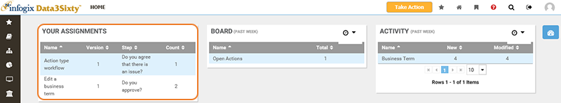
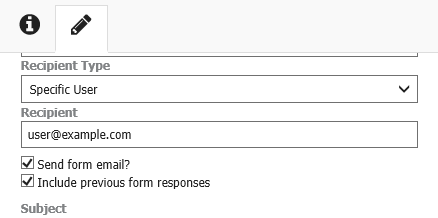
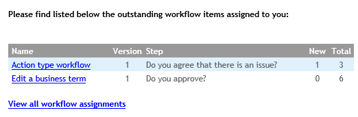

|
|
Sending workflow assignment emails
When a new assignment is triggered, a new entry will be added to the Your Assignments panel for the relevant recipient on the home page:

You can notify users about their open assignments via email. When building a workflow with a Form activity, you can select an option to send an email each time a new form assignment is triggered. You can also enable an option to send a daily email to users with outstanding workflow assignments, summarizing their open tasks.
Note: These settings are independent of each other. You can choose to enable one, both or neither.
See:
Sending notifications for each assignment
When you add a new Form activity to a workflow, there is an option to select Send form email?:

If you select this option, an email notification will be sent to the relevant user with a link to complete the form. The user will receive an email each time a new form assignment is triggered. See Creating a form for more details.
Tip: If you want to control the number of emails a user receives, you can choose not to select this option, and instead enable daily workflow summary emails.
Sending workflow summary emails
You can group a user's open assignments into one daily workflow summary email.
To enable this option, navigate to the Workflow section of the the Administration > Settings page. For more details, see Customizing the application. By default, this setting is not enabled and summary emails are not sent.
When this setting is enabled, a daily summary email is sent to users who have outstanding workflow assignments at 5am UTC. The summary email details any outstanding workflow assignments that were generated from a Form step in a workflow. The subject of a workflow summary email indicates how many items require attention, and the body of the email lists the open assignments by workflow, version and step. For example:

- Workflow - Link to open the selected assignment details in the application.
- Version - The version of the workflow.
- Step - Name of the workflow step that triggered the assignment.
- New - A count for new assignments. New is defined as new since the last summary email was sent.
- Total - Total number of outstanding assignments for the workflow step. The total count includes new and existing assignments.
- View all workflow assignments - Link to the Your Assignments panel on the home page of the application where all open assignments are listed.
Tip: If you have enabled the option to send workflow summary emails, you can optionally choose to disable the Send form email? option on Form activities in workflows to reduce the number of notifications a user receives.
Note: Emails sent as part of Email Notification workflow steps are not included in workflow summary emails and will continue to be sent separately.